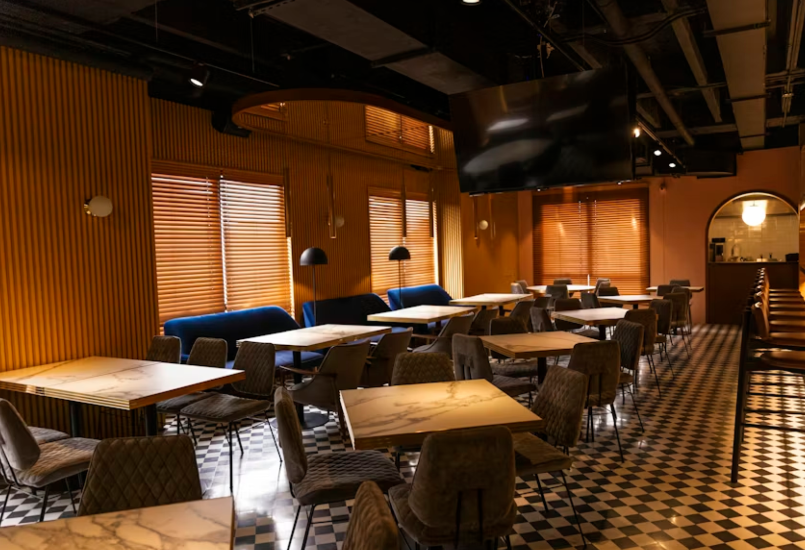
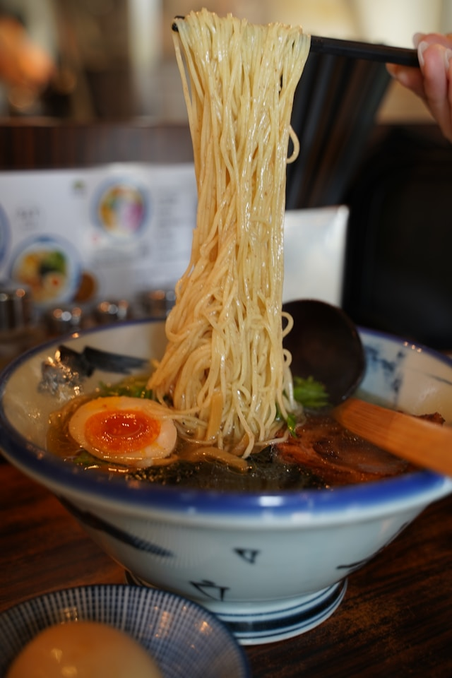
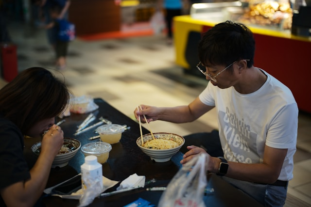
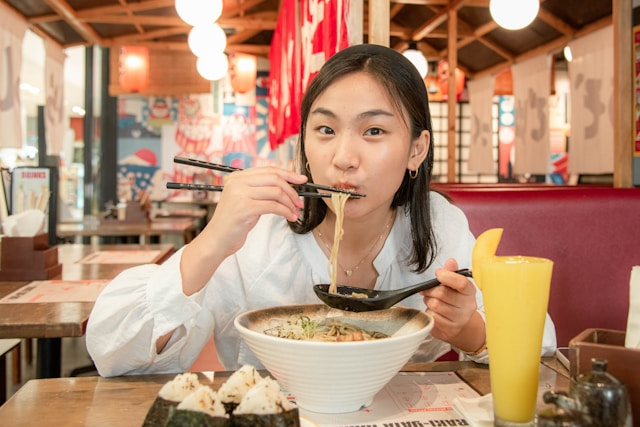
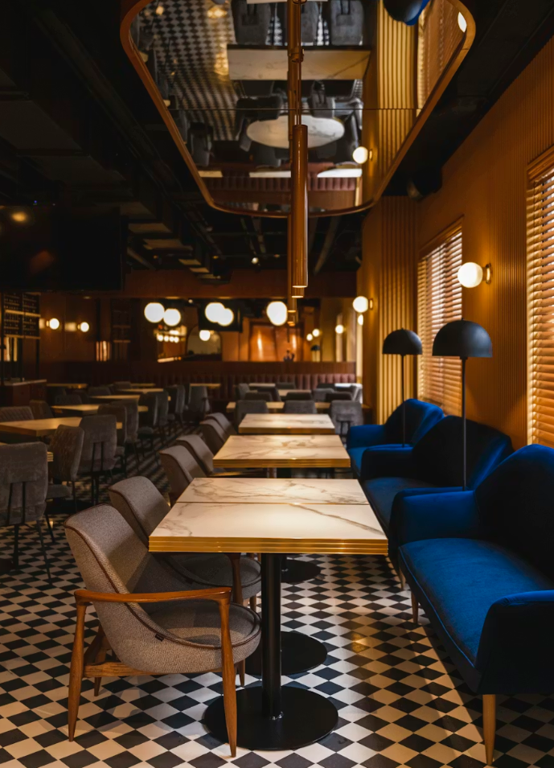
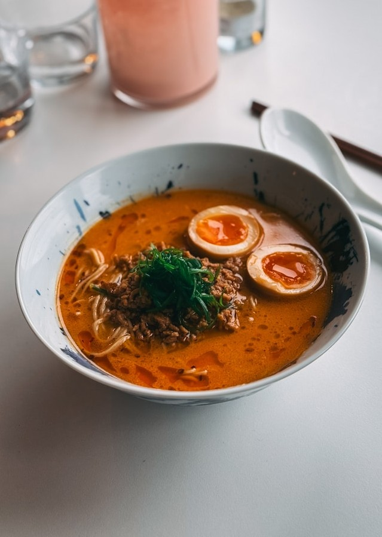
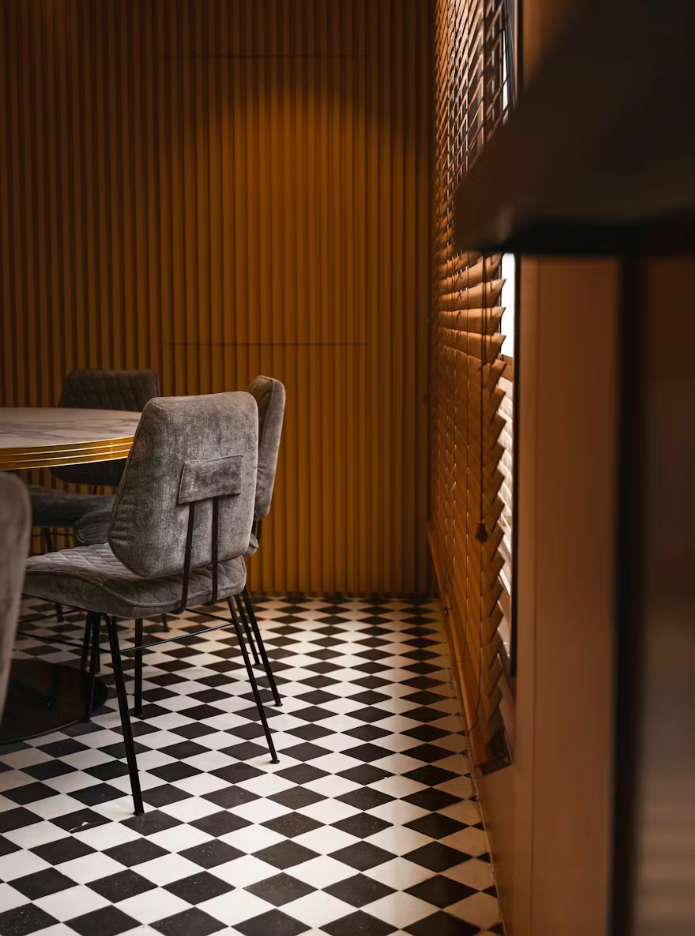

The Art of the Bowl
Mengabadikan setiap momen kebahagiaan, ketelitian di setiap racikan, dan harmoni ketenangan yang kamu rasakan di kedai kami.






Behind the Craft
Made with Care,
Made with Care,
Served with Heart
Di dapur kami, setiap mangkok ramen punya ceritanya sendiri. Kami mulai menyiapkan kaldu sapi sejak pagi buta, memastikan setiap bumbunya pas sebelum akhirnya sampai di mejamu.
Lewat foto-foto ini, kami ingin berbagi sedikit suasana di balik layar. Sebuah bentuk dedikasi tim kami supaya kamu bisa merasakan kehangatan yang jujur di setiap suapannya.
24h
Broth Age
100%
House Made
Soul
Philosophy
Guest Moments
Shared memories from our community.


